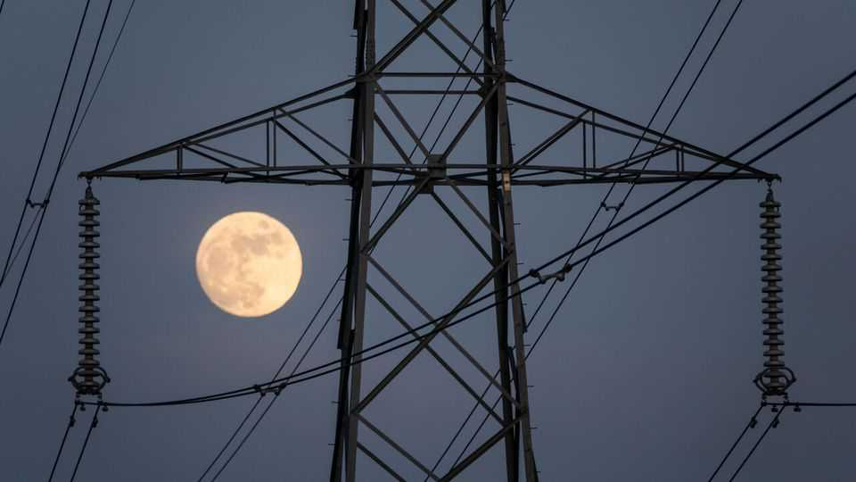
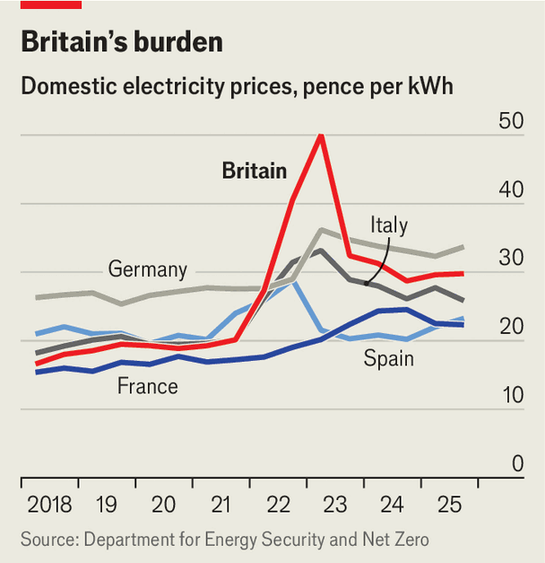

Britain’s energy system gets half an overhaul
But bills will remain uncomfortably high

Oct 29th 2026
British households and businesses have struggled with expensive energy for years. Firms in the country pay more than in any EU member state. Domestic consumers are near the top of that undesirable league table (see chart).
Cheaper rather than greener power was the promise from John Healey, the chancellor, in his budget on October 28th. He signalled a shift away from prioritising low-carbon electricity generation at all costs. “From this point, our Labour government priority is first and foremost cheaper energy,” he said.

He proposed a handful of short-term measures and some longer-term ambitions. Most Britons will get a one-off payment of £100 ($133) this winter. A previous decision to remove value-added tax from bills temporarily will be extended. The “standing charge” on gas bills, a daily payment to stay connected to the network, will be removed and a planned levy which would have funded hydrogen energy products is cancelled. Largely, this doesn’t change the underlying costs; it just moves them around.
In the longer run, Mr Healey said, the government will approve green projects only if they cut costs for consumers. He promised that more “fixed-price contracts” for renewable energy will make Britain less reliant on volatile international markets for natural gas. (Left unsaid was that this could also lock in higher prices if markets go down.)
A target of generating almost all electricity from zero-carbon sources by 2030, which looks increasingly hard to reach, stays in place. Allies of Miatta Fahnbulleh, the energy secretary, and Ed Miliband, her predecessor, insist cheap power was already a priority. The short-term subsidy will be “cold comfort for households”, according to the Resolution Foundation, a think-tank; average annual bills are forecast by EDF, an energy provider, to jump by 27% (or nearly £500) in January and another 8% in April.
Abolishing the standing charge puts more burden onto the variable part of the bill, pushing up the unit price of gas and making bills more expensive for heavy users. Shifting green levies onto general taxation only moves the burden to taxpayers. Mr Healey made a welcome pledge to adopt new rules to speed up the construction of nuclear power stations, but this will take years to have any effect on bills. He is resisting calls to introduce more localised pricing for electricity, which could make markets more efficient. The government has approved the exploration of a new gasfield in the North Sea, but ministers are divided over whether to give the green light to an oil project nearby.
Alarmingly, it is not clear whether the grid could handle cheaper energy if this pushed up demand. The country’s power infrastructure came close to blackout during a summer heatwave, according to a leaked report from the National Energy System Operator, which runs the system. Cheap or green? Neither matters much if the lights go off.■